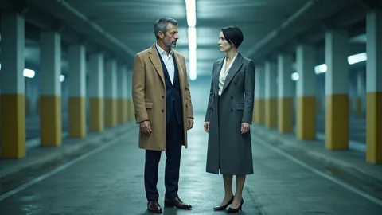
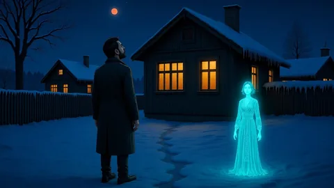

Sviluppo immagini · Storyboard · Graphic novel
Graphic novel e Storyboard
A chi è rivolta: a chiunque sia curioso delle narrazioni visive fatte con l'AI — lettori di fumetti, illustratori e redattori che vogliono farsi un'idea della tecnologia, studenti di cinema e sceneggiatori che esplorano la previsualizzazione. Non occorre avere conoscenze tecniche (come quelle su ComfyUI) per apprezzare le storie sottostanti; i Post di accompagnamento entrano nel dettaglio per chi vuole generare storie simili.

Sotto l'Asfalto STORYBOARD · CRIMINE · ACTION Primo Incontro STORYBOARD · ROMANTICO · COMMEDIA
Aelita ROMANZO A FUMETTI · FANTASCIENZA SOVIETICA · FUTURISMO Ecco Pannocchino e Spighetta
STORYBOARD · FAMIGLIA · MASCOTTE
Ecco Pannocchino e Spighetta
STORYBOARD · FAMIGLIA · MASCOTTE
Scopo della pagina è presentare alcune brevi storie per immagini: fumetti e storyboard. A differenza dei video, la creazione delle immagini statiche è oggi altamente automatizzabile, a costi bassi. Questo ha comportato un danno nel mondo delle illustrazioni e dei fumetti tradizionali, riducendo ulteriormente i profitti e la tutela dell'autore. Sebbene le scuole di sceneggiatura/storyboard, a partire dai corsi del CSC, Centro Sperimentale di Cinematografia (fondazionecsc.it), continuino ad avere una domanda e un'offerta cospicua, il mercato è un po' cambiato. Sto parlando delle piccole/medie case di produzione italiane, ossia con budget da mezzo a due milioni di euro, dove l'utilizzo di storyboard è calato. Senza esserci stata effettivamente una massiva sostituzione con quelli generati automaticamente. Questo aspetto è causato, non solo da problematiche politico-sociali di diffidenza ed esclusione, ma anche da una bassa qualità dei tool preconfezionati disponibili sul web con abbonamenti medi dell'ordine di 35-50$/mese. A tutto questo aggiungerei un dato di natura culturale legato all'asimmetria del digital divide, imperante in settori quali il cinema, tendenzialmente poco adeguata ai tempi, per quanto riguarda i tool di pre-produzione e di organizzazione/comunicazione in fase realizzativa, a differenza delle platform dove agiscono Disney, Netflix, Amazon, Apple ecc. In cui, un regime imprenditoriale rivolto all'ottimizzazione dei costi e alla remotizzazione delle risorse, favorisce una meticolosa attenzione alle tecnologie innovative (sia grafiche che testuali/comunicative) in tutte le fasi produttive.
Ho denominato gli esempi di questa sezione: Storyboard e Graphic Novel. Ma a essere pignoli non sono né l'uno né l'altro. Le storie del gruppo Storyboards mancano di una costruzione opportuna degli shot di raccordo, per evocare una narrazione visiva più articolata e utile come supporto alla regia. Mentre le graphic novel sono veramente brevi. In questa sede, più che la completezza, ho cercato di restituire una consistenza generativa, didatticamente propedeutica alla progettazione di uno storyboard automatico vero e proprio. Non a caso, ogni storia illustrata nei link in esergo è corredata da Post (vedi link a sezione ComfyUI) di contenuti didattico-illustrativi, che cercano di descrivere la tecnologia utilizzata. E' evidente quale sia oggi il gap comunicativo tra cosa si stia generando e su come venga generato: le img prodotte vengono viste come delle opere di magia/stregoneria da cui occorre difendersi, come dal canto delle Sirene nell'Odissea. Facciamo un esempio. I tutorial di YouTube dedicati all'AI generativa spiegano in modo pratico, e a volte sbrigativo, i punti chiave per progettare o soltanto per eseguire un processo di generazione immagini (video, suoni, ecc.) con un certo tool. Ma non offrono mediamente spiegazioni su come e perché quella tecnologia funzioni, su quale sia la sua estendibilità, e in particolare in quali casi dia pessimi risultati. Capisco che i modelli formali sottesi non siano facilmente divulgativi, ma puntare solo all'aspetto tecnico-manipolativo, e dare per scontate tutta una serie di conoscenze necessarie per capire e quindi riprovare a fare esempi simili, significa allontanarsi concettualmente dalla tecnologia. Quindi alimentare il processo di paura e consegna inerme alla schiavizzazione. Questo scarto tra approfondire e vedere immediatamente un risultato spinge a una proliferazione di tool pronti all'uso — i vari Katalist, LTX Studio, Boords AI — che si presentano come un cappello magico, capaci di fare tutto: dagli ADV ai reels, dai racconti agli storyboard, grazie a due prompt e qualche parola chiave.
Terminata la lunga premessa, mi focalizzo sugli obiettivi primari.
- Verificare il minimo input necessario (ossia le immagini di partenza) per generare una storia comprensiva di elementi mancanti nell'informazione iniziale. Le pipeline di sistemi come ComfyUI sono ormai in grado di coprire una vasta gamma di informazioni mancanti, senza ricorrere necessariamente apprendimenti mirati come LoRA e simili. Sebbene l'uso di Nodi di training personalizzati (come appunto LoRA) sulla storia, permetta una migliore qualità visiva della storia stessa.
- Mantenere l'identità del volto, corpo, abbigliamento e spazio durante una sequenza di fotogrammi — questo è l'aspetto più critico dei tool (preconfezionati) disponibili in rete, che spesso dimenticano l'identità e la consistenza iniziale.
- Conservare la congruenza tra il testo dello script e l'immagine generata — l'immagine non è banalmente frutto di un prompt design, ma il risultato di una orchestrazione di nodi, ognuno dei quali è una rete neurale o una funzione grafica, controllati da una pipeline che ne costituisce l'ossatura, il telaio (intuitivamente fatta di mattoncini con porte di entrata/uscita e segmenti che connettono queste porte).
Mi riprometto nei prossimi post di descrivere uno storyboard più professionale, a partire da una sceneggiatura esterna scritta da un professionista e amico: Riccardo Aprile, vincitore di un premio Solinas.